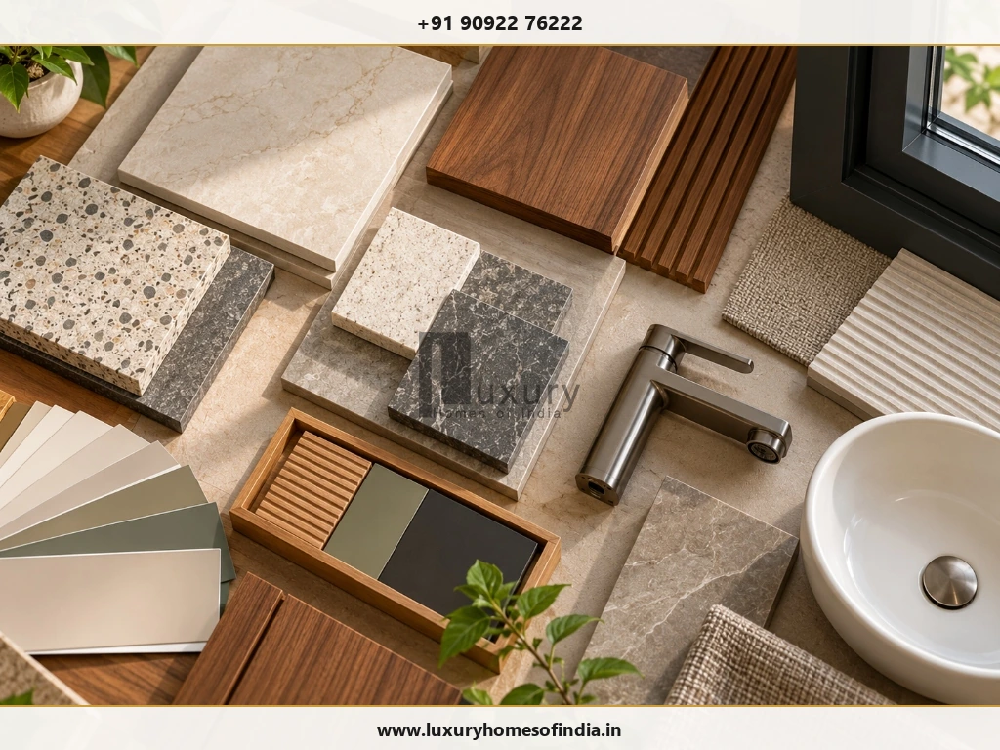
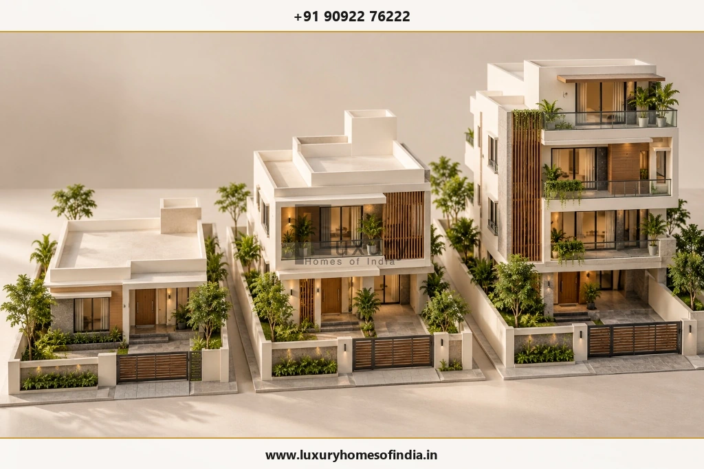
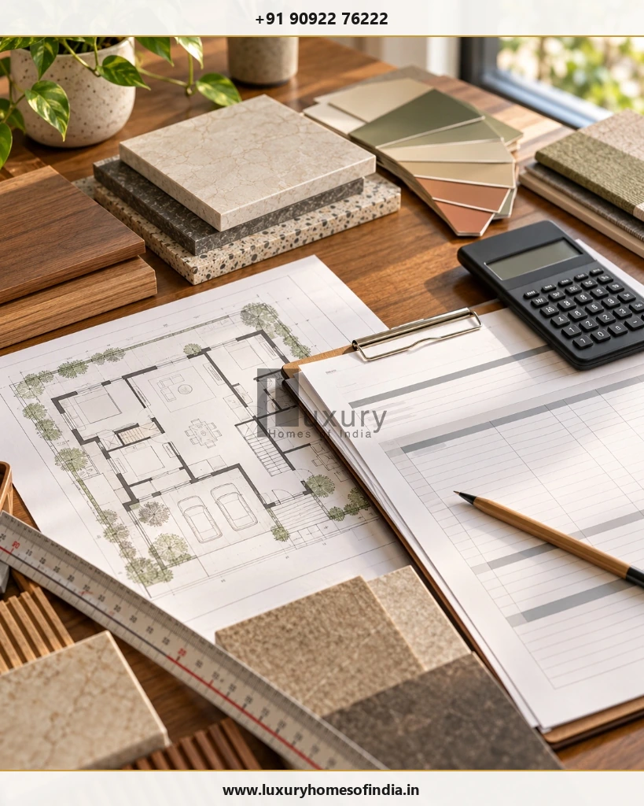

Executive Summary for Chennai Landowners
Building a house on a 2,400 sq. ft. plot in Chennai requires more than multiplying the land area by a construction rate. Your budget depends on the permitted building footprint, total built-up area, number of floors, structural design, material specifications, finishing choices and the work included in your contractor's quotation.
In Chennai, 2,400 sq. ft. is commonly referred to as one ground. A ground-floor house, a G+1 home and a G+2 residence can have very different construction budgets because their total built-up areas differ. For example, a hypothetical 2,800 sq. ft. house calculated at ₹2,500 per sq. ft. produces a base construction estimate of ₹70 lakh before separately excluded expenses. This is a calculation example, not a verified 2026 market rate or an LHI quotation.
The practical approach is to establish the permissible construction area first, prepare an itemised estimate, compare equivalent specifications and account for approvals, utilities, external works, interiors and contingency. This guide explains how to do that for a one-ground plot in Chennai.

1. What Can You Build on a 2,400 Sq. Ft. Plot?
A 2,400 sq. ft. plot represents the total land area, not the amount of covered construction automatically permitted on every floor.
The actual building footprint and total permissible floor area depend on the applicable planning requirements, setbacks, plot dimensions, road width, building height, intended use and other site-specific factors.
For preliminary cost planning, the following scenarios illustrate how different floor configurations affect the total area used in a construction estimate.
| Configuration | Illustrative area per floor | Illustrative total built-up area |
|---|---|---|
| Ground floor | 1,200–1,600 sq. ft. | 1,200–1,600 sq. ft. |
| G+1 | 1,200–1,600 sq. ft. | 2,400–3,200 sq. ft. |
| G+2 | 1,200–1,600 sq. ft. | 3,600–4,800 sq. ft. |
These are budgeting scenarios only, not permitted building limits or assurances that a particular configuration is feasible.
Understand Three Important Measurements Before Preparing a Budget:
- Plot area: The total land area.
- Building footprint: The area occupied by the building at ground level.
- Total built-up area: The sum of the areas counted on each floor under the measurement method used in the quotation.
Ask the contractor to explain exactly how built-up area is measured, including the treatment of staircases, balconies, covered spaces and other relevant elements.
2. Construction Cost per Square Foot in Chennai
The cost per square foot depends on the specification, structural requirements, design complexity, finishes and contract scope. A standard-finish home and a luxury residence can have substantially different budgets even when their total built-up areas are similar.
The following table retains the original draft's working assumptions for comparing specifications. These are not verified current Chennai market rates. Obtain dated, comparable quotations before relying on them for a 2026 project budget.
| Illustrative specification | Working rate per sq. ft. |
|---|---|
| Standard | ₹1,900–₹2,300 |
| Premium | ₹2,300–₹2,900 |
| Luxury | ₹2,900–₹3,800+ |
The categories above are planning labels, not standardised industry definitions. Ask each contractor to define the materials, finishes, workmanship, design services and other inclusions associated with the quoted rate.
Before comparing quotations, establish whether the price includes:
- Civil construction and structural works.
- Flooring, doors, windows and painting.
- Electrical and plumbing installations.
- Sanitaryware, bathroom fittings and other fixtures.
- Architectural and structural design fees.
- Project management, applicable taxes and statutory charges.
- External works, compound walls, utility connections and interior fit-outs.
An apparently lower rate may exclude items that another quotation includes. Compare the scope and specifications, not just the headline number.

3. Ground-Floor House Cost on a One-Ground Plot
If a preliminary design uses 1,200–1,600 sq. ft. of ground-floor construction, the base construction estimate can be calculated by multiplying the assumed built-up area by the selected working rate.
| Built-up area | Standard | Premium | Luxury |
|---|---|---|---|
| 1,200 sq. ft. | ₹22.8–27.6 lakh | ₹27.6–34.8 lakh | ₹34.8–45.6 lakh+ |
| 1,400 sq. ft. | ₹26.6–32.2 lakh | ₹32.2–40.6 lakh | ₹40.6–53.2 lakh+ |
| 1,600 sq. ft. | ₹30.4–36.8 lakh | ₹36.8–46.4 lakh | ₹46.4–60.8 lakh+ |
Calculation basis: Standard ₹1,900–₹2,300, premium ₹2,300–₹2,900 and luxury ₹2,900–₹3,800+ per sq. ft.
For example, 1,400 sq. ft. multiplied by ₹2,500 per sq. ft. gives an illustrative base construction estimate of ₹35 lakh. The ₹2,500 rate is a hypothetical calculation input, not a verified market quote.
These estimates do not automatically include land purchase, every approval fee, compound walls, gates, external development, utility connections or complete interior fit-outs.
A smaller building footprint may leave space for parking, daylight, ventilation and outdoor utility areas, subject to the approved design and site constraints.
4. G+1 House Construction Cost on a 2,400 Sq. Ft. Plot
A G+1 house has a ground floor and one upper floor. Depending on the family's needs and the approved design, it can accommodate common living spaces downstairs and additional bedrooms or private spaces upstairs.
For the following calculations, the assumed total built-up area ranges from 2,400 to 3,200 sq. ft.
| Total built-up area | Standard | Premium | Luxury |
|---|---|---|---|
| 2,400 sq. ft. | ₹45.6–55.2 lakh | ₹55.2–69.6 lakh | ₹69.6–91.2 lakh+ |
| 2,800 sq. ft. | ₹53.2–64.4 lakh | ₹64.4–81.2 lakh | ₹81.2 lakh–₹1.064 crore+ |
| 3,200 sq. ft. | ₹60.8–73.6 lakh | ₹73.6–92.8 lakh | ₹92.8 lakh–₹1.216 crore+ |
Consider a hypothetical layout with 1,400 sq. ft. on each of two floors. Its combined area is 2,800 sq. ft. At a working rate of ₹2,500 per sq. ft., the base construction calculation is ₹70 lakh.
The final estimate depends on the structural design, foundation requirements, staircase configuration, service installations and selected finishes. A multi-storey home must be designed for its intended loading and site conditions rather than copied from another building's foundation design.
5. G+2 House Construction Cost on a One-Ground Plot
A G+2 house comprises the ground floor, first floor and second floor. It may suit a larger household or a design with multiple living areas, subject to planning feasibility and the approved building design.
For an illustrative total built-up area of 3,600–4,800 sq. ft., the working calculations are:
| Total built-up area | Standard | Premium | Luxury |
|---|---|---|---|
| 3,600 sq. ft. | ₹68.4–82.8 lakh | ₹82.8 lakh–₹1.044 crore | ₹1.044–₹1.368 crore+ |
| 4,200 sq. ft. | ₹79.8–96.6 lakh | ₹96.6 lakh–₹1.218 crore | ₹1.218–₹1.596 crore+ |
| 4,800 sq. ft. | ₹91.2 lakh–₹1.104 crore | ₹1.104–₹1.392 crore | ₹1.392–₹1.824 crore+ |
These figures are mathematical estimates based on the working rates, not quotations for a specific site.
A G+2 proposal requires particular attention to permitted height and floor area, foundation and structural design, staircases, building services, access and any other applicable requirements. Do not assume that every 2,400 sq. ft. plot can accommodate three floors or the illustrative areas shown here.

6. Quick Construction Budget Comparison
The table below uses a single hypothetical rate of ₹2,500 per sq. ft. to make the effect of total built-up area easier to understand.
| Configuration | Assumed total built-up area | Base construction calculation |
|---|---|---|
| Ground floor | 1,600 sq. ft. | ₹40 lakh |
| G+1 | 2,800 sq. ft. | ₹70 lakh |
| G+1 | 3,200 sq. ft. | ₹80 lakh |
| G+2 | 4,200 sq. ft. | ₹1.05 crore |
| G+2 | 4,800 sq. ft. | ₹1.20 crore |
The formula is straightforward:
Base construction estimate = total built-up area × assumed construction rate per sq. ft.
The example rate is not an LHI quotation or a guarantee of the amount you will pay. The calculation also excludes expenses that are outside the assumed rate.
For a more realistic project budget, start with a measured plan, a defined specification and a written list of inclusions and exclusions. Add separately priced items and an appropriate contingency based on the maturity of the design and the risks identified for the site.
7. Additional Costs Beyond the Construction Rate
The base construction estimate is not necessarily the full amount required to complete and occupy the house.
| Expense category | Items to investigate |
|---|---|
| Design and engineering | Architectural plans, structural calculations and building-services drawings |
| Site investigation | Soil investigation and site-specific foundation requirements |
| Permissions and charges | Applicable approvals, statutory charges and professional fees |
| Site preparation | Clearing, excavation, levelling, filling or dewatering where required |
| Boundary works | Compound wall, gate and entrance works |
| Water storage | Sump, overhead tank, pumping arrangements and related installations |
| Utilities | Applicable water, drainage and electricity connections |
| External works | Paving, rainwater drainage, landscaping and site access |
| Interior fit-outs | Modular kitchen, wardrobes, furniture and decorative lighting |
| Optional systems | Lift, solar installation, home automation or other selected equipment |
| Contingency | Unforeseen site conditions and approved changes to the scope |
Not every project needs every item, and some contractors include selected items in their packages. Check the written BOQ and contract exclusions rather than assuming that all listed items are additional.
For preliminary planning, a contingency allowance of 10–15% may be considered as an illustrative budgeting approach, subject to adjustment for site conditions, design maturity and the certainty of the scope. It is not a guaranteed allowance or a substitute for a project-specific estimate.
Read our related guide to hidden costs in house construction in Chennai if that page is live and relevant.

8. What Affects the Cost of Building on a One-Ground Plot?
Soil and foundation conditions
Soil characteristics and site conditions can influence excavation, foundation design and site preparation. Soil investigation and structural engineering help establish the appropriate solution for the actual site.
Number of floors and structural design
Additional floors change the total built-up area and the requirements for foundations, columns, beams, slabs, staircases and other structural components. The design must suit the proposed building and site conditions.
Material and finish specifications
Cement, steel, masonry, flooring, windows, doors, electrical fittings and sanitaryware all influence the budget. Ask for defined specifications, quantities and approved equivalents instead of relying on broad labels such as premium or luxury.
Architectural complexity
Building projections, double-height spaces, specialised spans, complex façade features and bespoke finishes can affect the cost and coordination requirements. The impact depends on the actual design and specifications.
Location and site access
Material delivery, site access, storage, local infrastructure and site conditions can affect execution and logistics. These factors should be assessed rather than assumed from the plot size alone.
Interior and lifestyle requirements
Kitchens, wardrobes, bathrooms, lighting, automation and bespoke furniture can significantly change the overall project budget. Decide which features are essential and which can be treated as optional upgrades.
9. How to Control Construction Costs Without Compromising Quality
- Confirm feasibility first. Establish the permissible footprint, floor area and building configuration before finalising the design.
- Freeze the layout and specifications. Late changes can result in rework, waste and additional expenditure.
- Prepare an itemised BOQ. Compare quantities, materials, rates and exclusions instead of comparing only total quotations.
- Prioritise finishes. Allocate the budget to the features that matter most instead of upgrading every element.
- Coordinate drawings. Resolve electrical, plumbing, kitchen and bathroom requirements before the relevant work begins.
- Compare equivalent scopes. Ensure competing quotations cover comparable work and quality levels.
- Agree on payment milestones. Link payments to clearly defined, verifiable stages and documented contract terms.
- Protect essential quality. Do not compromise structural engineering, reinforcement, concrete specifications, curing, waterproofing or required safety provisions merely to reduce the headline cost.
Read our guide to how to reduce house construction cost if that destination is available and its content adds further practical guidance.
10. Checks Before Starting Construction
Use this checklist to prepare for a more reliable estimate and a better-defined project scope.
- Verify land documents and property boundaries.
- Identify the applicable planning authority and current building requirements.
- Have a qualified architect assess the proposed footprint and floors.
- Arrange site investigation and structural design as appropriate.
- Coordinate architectural, structural and building-services drawings.
- Obtain the approvals required before starting regulated work.
- Prepare a detailed BOQ and written material specifications.
- Agree on exclusions, payment milestones and schedule assumptions.
- Budget for utilities, external works and interior fit-outs.
- Set a contingency appropriate to the project's risks and design maturity.
A preliminary budget is most useful when it reflects a feasible design and a clearly defined scope rather than the land area alone.
Frequently Asked Questions
Plan Your One-Ground House with a Clear Budget
A 2,400 sq. ft. plot in Chennai can offer different design possibilities, but the feasible configuration must be established before committing to a budget.
Start by confirming the permissible construction area. Then define the built-up area, specification, structural requirements and contract inclusions. Account separately for approvals, utilities, external works, interiors and contingency where these are not covered by the construction rate.
If you are planning a house on a one-ground plot, prepare your proposed floor configuration and approximate built-up area before seeking a project-specific estimate. This will make it easier to discuss scope, specifications and budget assumptions.
Contact Luxury Homes of India
Discuss your plot layout, permissible built-up area, and customized construction budget with our engineering team.
- Website: https://www.luxuryhomesofindia.in/
- Phone: +91 90922 76222
- Email: info@luxuryhomesofindia.in
- Address: #85, 4th Floor, Lotus Tower, Guindy, Chennai – 600032
Disclaimer: The figures in this article are illustrative planning calculations based on stated working rates. They are not verified current market rates, a project-specific estimate or a binding LHI quotation. Actual costs depend on the approved design, measured built-up area, site conditions, materials, market prices, applicable taxes and contract inclusions. Confirm planning feasibility and obtain a current, site-specific estimate before making financial commitments.